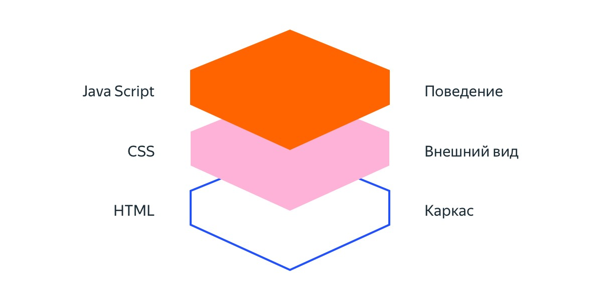
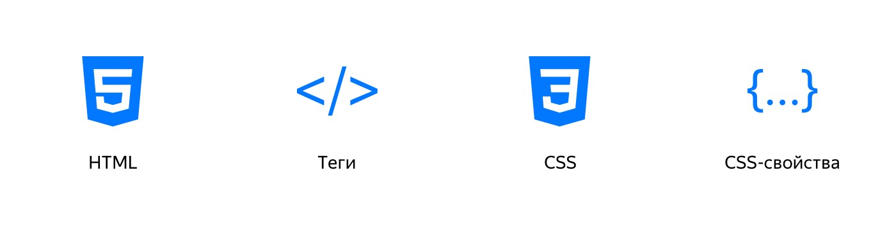

Это внешний вид и структура сайта: шрифты, цвета, кнопки, элементы меню, разделы и т.д. Его продумывают после того, как возникает идея сделать сайт. Дизайн есть у всех элементов сайта: от баннера или всплывающего меню на главной странице до кнопки перехода в чат в разделе «Контакты».
Это любая информация, которую владелец сайта размещает на его страницах: текст, ссылки, фото, аудио и видеоматериалы. Контент сайта хранится на хостинге. Когда пользователь заходит на определённую страницу, программное обеспечение хостинга находит и загружает нужные файлы.
Код — это текст, в котором разработчики описывают дизайн и поведение сайта на понятном для компьютеров языке. Такие языки называют языками программирования. Языки бывают разные: с помощью одних описывают интерфейс, с помощью других — поведение сервера. Интерфейсный код (Front-end) описывает дизайн. С его помощью компьютеры понимают внешний вид и расположение элементов на сайте. Чтобы написать интерфейсный код, программисты используют языки HTML, CSS и Javascript. Возможно, вам встречалось такое понятие как «вёрстка сайта». Вёрстка сайта — это процесс создания интерфейсного кода.

Треугольник интерактивной вёрстки состоит из HTML, CSS, JavaScript. Начинать нужно с HTML и CSS. Причём сразу с обоих. Разбор конструкций языков HTML и CSS происходит по принципу «от общего к частному». Вы узнаете, что такое HTML-теги и атрибуты HTML, свойства и селекторы CSS.

Серверный код (Back-end) описывает поведение сайта. С его помощью сервер определяет, что произойдёт, если пользователь нажмёт на кнопку или введёт текст. У одностраничных сайтов такого кода может и не быть. Серверный код нужен, если на сайте есть возможность создать аккаунт, купить товар или услугу. Серверный код пишут на CSS, Java, Ruby и т.д. Для создания сайта нужно придумать дизайн, найти контент и написать код. Всё это можно заказать у веб-студии или сделать самому.